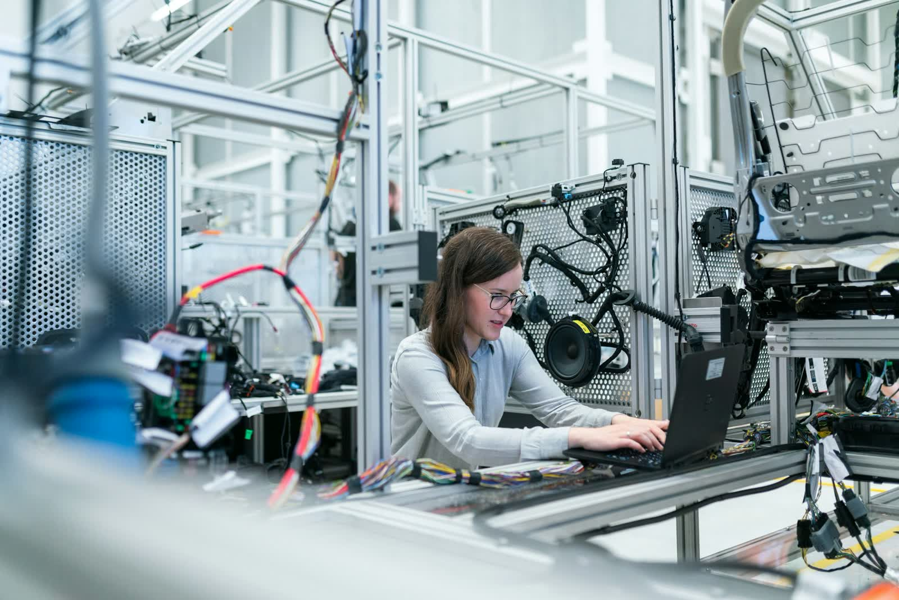
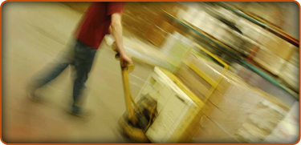

Guías y puertas correderas
Sistemas completos para puertas correderas de todo tipo de mueble: armarios, muebles de cocina y estanterías.
Ver catálogo
Desde 1991 en el corazón del sector mueblero de Jaén. Herrajes, bisagras, guías, ruedas, iluminación y soluciones técnicas para hogar, cocina, baño, dormitorio y oficina.

Ferromobel es una empresa de fabricación y distribución de herrajes y componentes para la industria del mueble, fundada en 1991 en Mancha Real (Jaén), epicentro de una de las zonas más importantes del sector mueblero en España.
Nos esforzamos por conseguir la mejor calidad y los mejores productos. En nuestras cadenas de montaje cuidamos hasta el más mínimo detalle para ofrecer soluciones fiables y duraderas.
Soluciones completas para cada tipo de mobiliario: desde guías y bisagras hasta iluminación y herrajes funcionales para cocinas, baños y oficinas.
Sistemas completos para puertas correderas de todo tipo de mueble: armarios, muebles de cocina y estanterías.
Ver catálogoBisagras de cazoleta, para mesas, rústicas y compases para distintos ángulos de apertura.
Ver catálogoRuedas con freno, giratorias, fijas y patas regulables para todo tipo de mobiliario.
Ver catálogoTornillos, excéntricas, pasadores y sistemas de unión para el ensamblaje profesional del mueble.
Ver catálogoSoportes de pared, estantes, cristal, colgadores y sistemas panelares para expositores.
Ver catálogoTiradores, pomos, cerraduras y herrajes decorativos que combinan funcionalidad y diseño.
Ver catálogoSistemas de iluminación LED para vitrinas, interiores de armario y zonas de trabajo.
Ver catálogoCerraduras de seguridad, bisagras reforzadas y herrajes específicos para mobiliario de oficina.
Ver catálogoHerrajes para columnas extractibles, muebles bajos de cocina, sistemas de baño y mesas extensibles.
Ver catálogo
Disponemos de un sistema innovador de embolsado con tecnología de última generación, que permite preparar kits de herrajes con código de barras propio, textos, referencias y logotipo del cliente.
Una solución que simplifica la logística de nuestros clientes y refuerza la imagen de su marca en cada producto.
Nos esforzamos por conseguir la mejor calidad y los mejores productos. En nuestras cadenas de montaje cuidamos hasta el más mínimo detalle.
Desde nuestra fundación en 1991, tres valores han guiado el crecimiento de Ferromobel como referente en herrajes para la industria del mueble.
Certificación de Calidad Empresarial CEDEC. Cada producto pasa controles rigurosos antes de llegar al cliente.
Servicio de asesoramiento personalizado y profesional en piezas especiales para el sector juvenil, moderno, baño y cocina.
Adaptación continua a las necesidades del mercado, con catálogos versátiles y productos diferenciadores para aumentar la competitividad de nuestros clientes.

Ponemos a tu disposición un catálogo de más de 2.500 referencias en stock permanente, organizado en 13 líneas técnicas. Contacta con nuestro equipo comercial para recibir asesoramiento y presupuesto a medida.
Atendemos a fabricantes de muebles, carpinterías, instaladores y distribuidores de toda España.
Ferromobel fabrica y distribuye herrajes y componentes para la industria del mueble: guías para puertas correderas, bisagras y compases, ruedas y patas, tornillos y sistemas de unión, soportes, herrajes funcionales, iluminación, y soluciones específicas para cocinas, baños, dormitorios, oficinas y mesas.
En el Polígono Industrial Camino Angosto, s/n, en Mancha Real (Jaén), código postal 23100. Estamos en el corazón de una de las zonas más importantes del sector mueblero de España.
Ferromobel fue fundada en 1991, como respuesta a las necesidades crecientes de la industria del mueble en la zona de Mancha Real.
Sí. Disponemos de un sistema innovador de embolsado con tecnología de última generación, que permite personalizar kits de herrajes con código de barras propio, textos, referencias y logotipo del cliente.
El catálogo está organizado en 13 líneas técnicas de producto y disponible en formato PDF. Puede solicitarlo contactando por teléfono (953 35 00 89) o por email (info@ferromobel.com).
Sí. Contamos con la certificación de Calidad Empresarial CEDEC, que acredita nuestro compromiso con la excelencia operativa y la mejora continua.
Estamos en el Polígono Industrial Camino Angosto de Mancha Real (Jaén). Contacta con nosotros por teléfono o email.